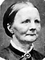
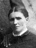
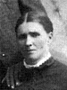

The Family of Joseph Smith and Ane Catherine Christensen Anderson
Home
Histories
Charts
Photos
Maps
Restricted
News
Info
Contact
| <--(return)-- |   | Jens Andersen and Ane Pedersen Anderson |
----> |   
| Joseph Smith Anderson Born 3 OCT 1855 Died 6 MAY 1925 and Ane Cathrine Christensen 25 APR 1851 - 26 OCT 1940 Married 6 MAR 1879 Joseph Smith Anderson also married Annie Margaret Nielson 6 DEC 1875 Ane Cathrine also married Christian Andersen 17 APR 1871 |
| * |
Christian Anderson 1 DEC 1879 - Died 14 JAN 1880 The 1st child of Joseph Smith Anderson and Ane Cathrine Christensen |
 |
Soren Carlos Anderson Born 16 JAN 1881 Oak City,Millard,Utah,USA Died 4 DEC 1950 Oak City,Millard,Utah,USA The 2nd child of Joseph Smith Anderson and Ane Cathrine Christensen |